Compac
Pedra reciclada Compac: a segunda vida do quartzo e do mármore
A pedra reciclada Compac dá uma segunda vida a fragmentos de quartzo e de mármore. Fabricada pelo grupo espanhol Compac, oferece cores regulares de um lote para outro, uma verdadeira vantagem para programas de habitação e projetos de equipamento. Fabricamos bancadas em pedra reciclada Compac por medida em Mafra.
A bancada em Pedra reciclada Compac
Compósito mineral ecológico que incorpora fragmentos reciclados de quartzo e mármore, fabricado pelo grupo espanhol Compac. Pouco poroso e resistente a riscos e impactos, mantém a cor constante entre lotes e adequa-se a projetos HQE, BREEAM ou LEED.
Pedra reciclada Compac
- Glacé (mate)
- Polido
- Espessuras 12 mm / 20 mm / 30 mm
- Quartzo e mármore
- Conteúdo reciclado
- Espessuras
- 12 / 20 / 30 mm
- Sem hidrófugo
- Pouco poroso
- Obras certificadas
- HQE · BREEAM · LEED
Acabamentos e formatos
- Glacé (mate)
- Polido
- 12 mm · 20 mm · 30 mm
Cores Pedra reciclada Compac
10 cores disponíveis, que pode também ver ao vivo na nossa fábrica de Mafra, mediante marcação.
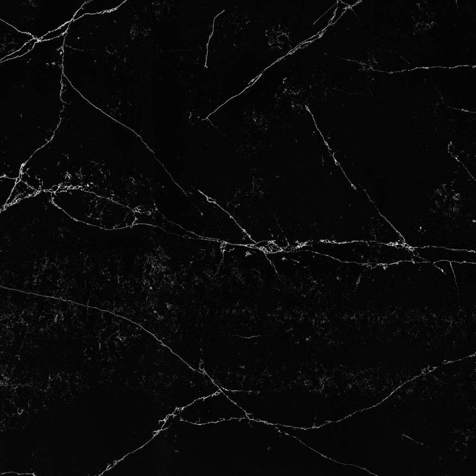
Unique MarquinaGlacé (mate) · PolidoPreto profundo estilo Nero Marquina, com veios brancos bem marcados.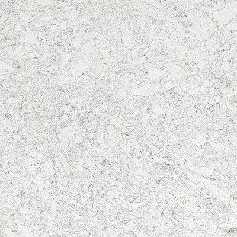
Volcano CloudGlacé (mate) · PolidoBranco nebuloso salpicado de finas lascas cinzentas recicladas.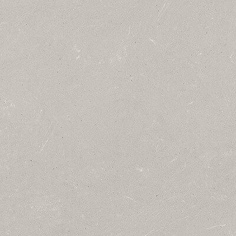
Volcano CoolGlacé (mate) · PolidoCinzento frio ligeiramente azulado, com pintas claras e escuras.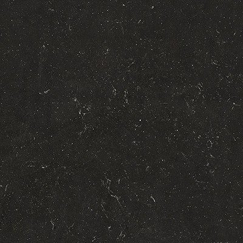
Volcano DarkGlacé (mate) · PolidoAntracite profundo salpicado de lascas cinzentas e brancas.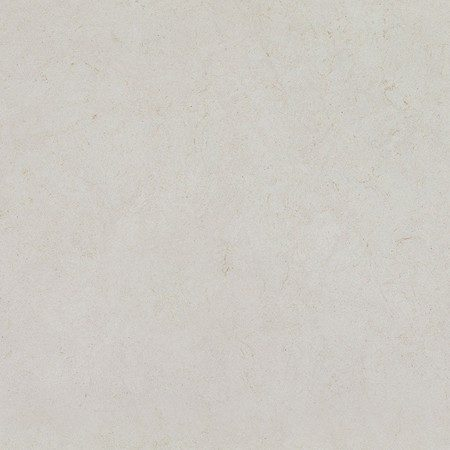
Volcano DimGlacé (mate) · PolidoCinzento médio suave com finas inclusões escuras e claras.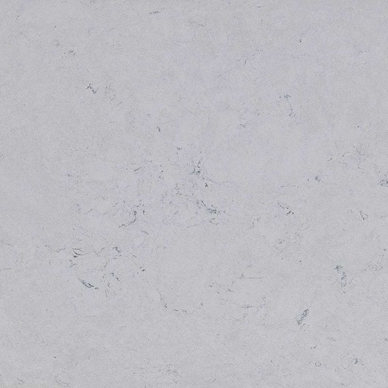
Volcano FogGlacé (mate) · PolidoCinzento névoa claro com grão reciclado fino e regular.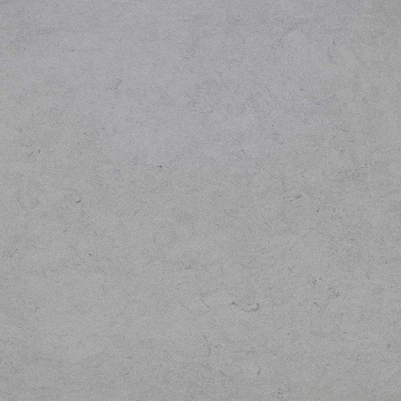
Volcano GreyGlacé (mate) · PolidoCinzento neutro salpicado de lascas minerais claras e escuras.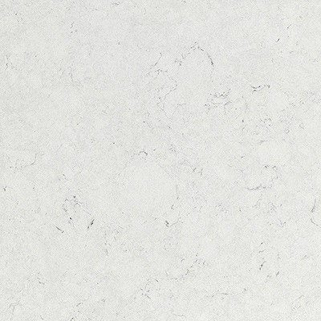
Volcano LightGlacé (mate) · PolidoBranco-sujo muito claro com discretas pintas cinzentas.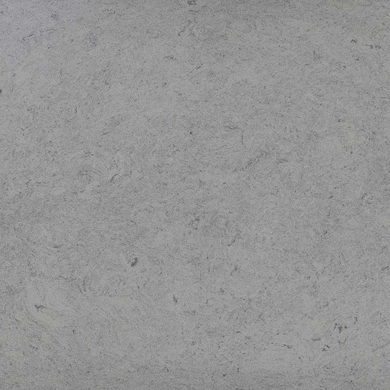
Volcano PearlGlacé (mate) · PolidoBranco pérola nacarado com finas inclusões cinzentas e bege.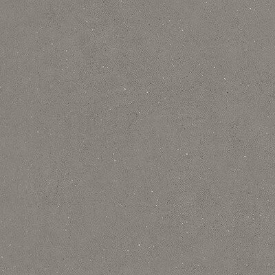
Volcano WarmGlacé (mate) · PolidoGreige quente salpicado de lascas bege, castanhas e cinzentas.
Ambientes
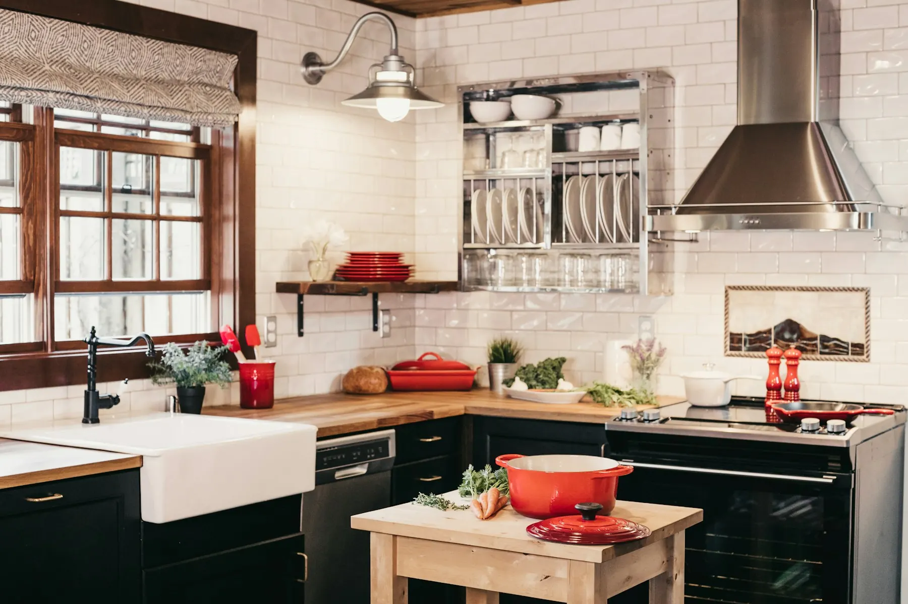
Pedra reciclada CompacAmbiente de cozinha 
Pedra reciclada CompacAmbiente de casa de banho 
Pedra reciclada CompacAmbiente de bancada
Porquê prescrever pedra reciclada Compac
A pedra reciclada Compac é um aglomerado mineral ecológico, que retoma o saber-fazer da marca no quartzo tecnológico. É pouco porosa, não precisa de impermeabilização e resiste bem aos riscos e aos impactos.
A sua grande vantagem para os profissionais é a regularidade. De um lote para outro, as cores mantêm-se coerentes segundo o fabricante, o que facilita equipar várias habitações, um hotel ou um espaço de escritórios com um resultado homogéneo. Adequa-se também a projetos que visam as certificações HQE, BREEAM ou LEED.
As três espessuras, 12, 20 e 30 mm, cobrem todos os usos, da frente de cozinha ao tampo de ilha, e há dois acabamentos, Glacé e Polido. Maquinamos as peças segundo os seus desenhos, controlamo-las e entregamo-las embaladas.
Cores Volcano e Unique Marquina
A série Volcano constitui o essencial da gama. As suas cores partilham a mesma assinatura, um salpicado de finas lascas recicladas, em tons muito variados.
- Para uma cozinha clara: Volcano Cloud, branco nublado, Volcano Pearl ou Volcano Light.
- Para um ambiente neutro: Volcano Grey, Volcano Dim, cinzento suave, ou Volcano Fog.
- Para tons mais marcados: Volcano Cool, cinzento ligeiramente azulado, Volcano Warm, mais quente, ou Volcano Dark, antracite profundo salpicado de lascas cinzentas e brancas.
À parte, Unique Marquina recupera o espírito do célebre Noir Marquina, preto profundo com veios brancos francos, para um efeito de mármore numa abordagem reciclada. O salpicado Volcano tem a vantagem prática de disfarçar bem migalhas e pequenas marcas, uma mais-valia em espaços muito frequentados.
As suas perguntas
As cores variam de um lote para outro?
Muito pouco: segundo o fabricante, a regularidade das cores de um lote para outro é um dos pontos fortes desta gama, ao contrário de uma pedra natural. É o que a torna adequada a programas de habitação, hotéis ou projetos realizados em várias fases. Indique a referência exata da cor e do acabamento em cada encomenda para manter a coerência das peças.
Que espessura de pedra reciclada Compac prever?
O 12 mm adequa-se a frentes de cozinha, revestimentos de parede, mobiliário e tampos de casa de banho, para uma linha muito fina. O 20 mm é o padrão da bancada de cozinha. O 30 mm dá um aspeto mais maciço, apreciado numa ilha ou num balcão. Indique a espessura e os balanços nos seus desenhos: no estudo, assinalamos os pontos a verificar.
Envie-nos os seus desenhos
Desenhos cotados, ficheiros técnicos, material e acabamentos: analisamos o seu pedido e respondemos em 48 horas úteis.